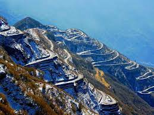

| Zuluk- The view of Sikkim |
| It
was once a transit point to the historic Silk Route from Tibet to
India. The silk route that connected Lhasa (Tibet) to Kalimpong was in
use even a few decades ago until the Chinese invasion of Tibet. It was
commonly used by traders traveling to Tibet through Jelep-la ("La"
stands for mountain pass) as an overnight base. The route started from
Kalimpong and passed through Pedong, Aritar, Dzuluk and Jelepla to
Chumbi valley in Tibet. Located at a height of around 10,100 feet on the rugged terrain of the lower Himalayas in East Sikkim, Zuluk or Dzuluk is a small village which was once a transit point to the historic Silk Route from Tibet to India. It is relatively an emerging and offbeat destination in East Sikkim. This small village accommodates a population of around 700 people. There is also an Indian Army base at Zuluk, which has been used as a transit camp for the army movement to the Chinese border, a few kilometres away. It is the very first village within this whole Silk Route circuit to offer home-stay facilities for tourists. 14 kms away from Zuluk, the Thambi View Point offers a panoramic view of the entire Mt. Khangchendzonga range. Zuluk is open to Indian nationals only who need to apply for Protected Area Permit. Dzuluk is surrounded by wild forest, some of the forests are completely virgin. Sighting of Deer, Wild Dog, Himalayan Bear the red panda is not very uncommon. Some tigers have also reportedly been sighted in the area. A variety of birds can also be seen such as Blood Pheasant, Himalayan monal, Kalij pheasant, Snow Pheasant and others.During the summer months, the area and its surrounding hills are covered with thousands of blooming rhododendron. Dzuluk during these months, is a riot of colors due to the variety of rhododendron that can be seen here. |
|  |
| Back to main |